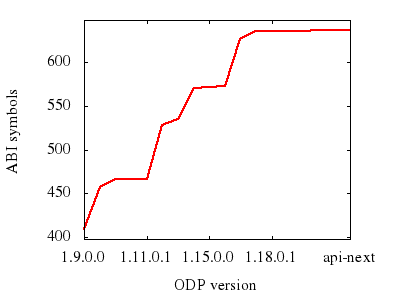

ABI
Tracker
(ODP)
API/ABI changes timeline
Version
Date
Soname
Change
Log
Backward
Compatibility
Added
Symbols
Removed
Symbols
Headers
Diff
api-next
N/A
120
N/A
N/A
N/A
N/A
N/A
current
2021-05-10
09:48
N/A
changelog
N/A
N/A
N/A
N/A
1.19.0.2
2018-07-04
119
changelog
99.76%
3 new
1 removed
3
1.19.0.1
2018-05-10
119
changelog
100%
0
0
0
1.19.0.0
2018-04-19
119
changelog
99.81%
changed SONAME
0
0
2
1.18.0.1
2018-03-16
118
changelog
100%
changed SONAME
0
0
0
1.18.0.0
2018-03-05
114/118
changelog
98.29%
changed SONAME
12 new
3 removed
113
1.17.0.0
2017-12-30
113/117
changelog
98.21%
changed SONAME
54 new
1 removed
27
1.16.0.0
2017-11-10
113/116
changelog
99.52%
changed SONAME
3 new
1 removed
20
1.15.0.0
2017-06-19
112/115
changelog
96.61%
changed SONAME
2 new
1 removed
24
1.14.0.0
2017-03-01
112/114
changelog
97.38%
changed SONAME
added 1 object
removed 1 object
15 new
0
22
1.13.0.0
2017-01-18
111/113
changelog
99.61%
changed SONAME
7 new
0
48
1.12.0.0
2016-12-02
110/112
changelog
100%
changed SONAME
62 new
0
6
1.11.0.1
2017-08-24
110/111
changelog
100%
0
0
1
1.11.0.0
2016-08-18
110/111
changelog
99.41%
changed SONAME
0
0
12
1.10.1.0
2016-06-14
110
changelog
100%
9 new
0
7
1.10.0.0
2016-05-03
110
changelog
93.41%
changed SONAME
57 new
9 removed
32
1.9.0.0
2016-04-21
109
changelog
N/A
N/A
N/A
N/A
Last updated on Wed May 19 21:29 2021.
Generated by
ABI Tracker
,
ABICC
and
ABI Dumper
tools.

abi-laboratory.pro